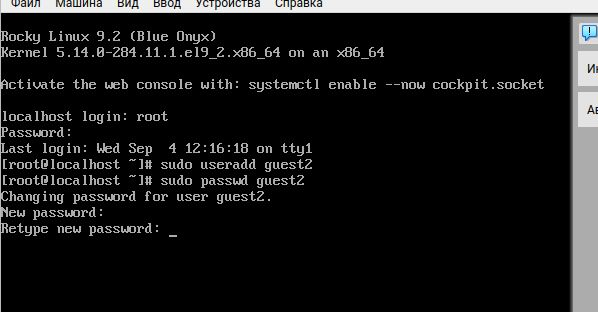
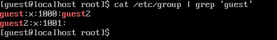

# Выполнение лабораторной
работы 5. Зашла на двух разных консолях от имени двух разных
пользователей с помощью команды
# Выполнение лабораторной
работы 5. Зашла на двух разных консолях от имени двух разных
пользователей с помощью команды
su <имя пользователя>Получить практические навыки работы в консоли с атрибутами файлов для групп пользователей. # Выполнение лабораторной работы
useradd, далее с помощью команды passwd задаю
пароль пользователю (рис. 1). # Выполнение лабораторной работы 4. Добавляю пользователя guest2 в группу guest (рис. 2).
# Выполнение лабораторной
работы 5. Зашла на двух разных консолях от имени двух разных
пользователей с помощью команды
su <имя пользователя>
pwd.Проверка для пользователя guest (рис. 3).
Проверка для пользователя guest2 (рис. 4).
Проверка для пользователя guest2 (рис. 5).
Проверка для пользователя guest (рис. 5).
 # Выполнение лабораторной работы 9.
От имени пользователя guest2 регистрирую его в группе guest с помощью
команды newgrp (рис. 6).
 # Выполнение лабораторной
работы 10. Добавляю права на чтение, запись и исполнение группе
пользвателей guest (guest, guest2) на директорию home/guest в которой
находятся все файлы для последующей работы (рис. 8).
# Выполнение лабораторной
работы 10. Добавляю права на чтение, запись и исполнение группе
пользвателей guest (guest, guest2) на директорию home/guest в которой
находятся все файлы для последующей работы (рис. 8).
Были получены практические навыки работы в консоли с атрибутами файлов для групп пользователей